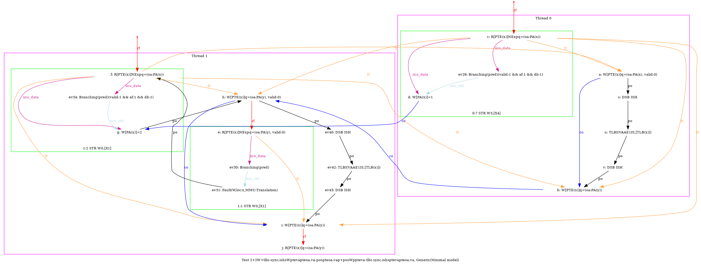
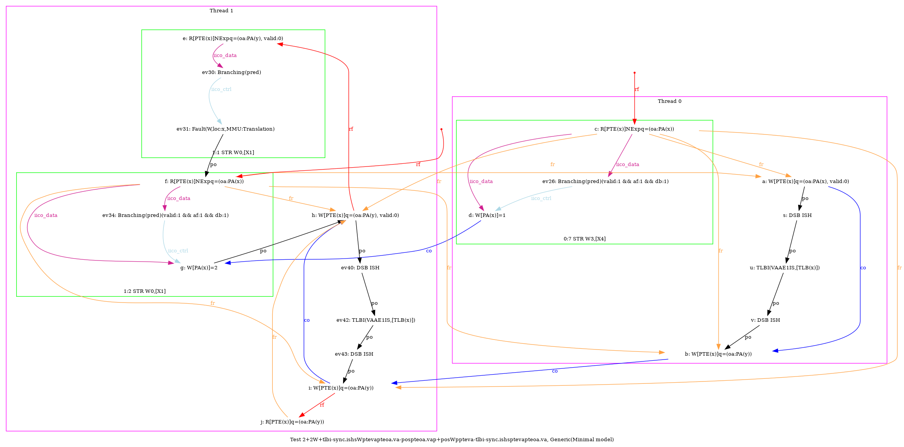
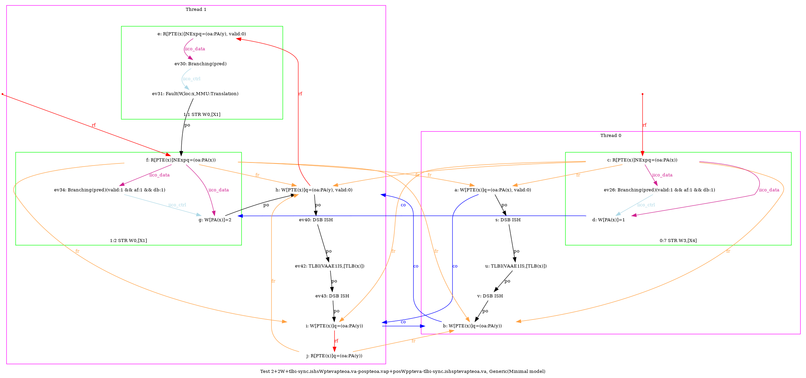

    …
…
AArch64 2+2W+tlbi-sync.ishsWptevapteoa.va-pospteoa.vap+posWppteva-tlbi-sync.ishsptevapteoa.va
"TLBI-sync.ISHsWWPteVAPteOA.VA PosWWPteOA.VAP Coe PosWWPPteVA TLBI-sync.ISHsWWPteVAPteOA.VA CoePteOA.VAPteVA"
Variant=imprecise
Cycle=Coe PosWWPPteVA TLBI-sync.ISHsWWPteVAPteOA.VA CoePteOA.VAPteVA TLBI-sync.ISHsWWPteVAPteOA.VA PosWWPteOA.VAP
Relax=[PteVA,TLBI-sync.ISHsWW,PteOA,PteVA]
Safe=Coe PosWW
Generator=diy7 (version 7.56+02~dev)
Com=Co Co
Orig=TLBI-sync.ISHsWWPteVAPteOA.VA PosWWPteOA.VAP Coe PosWWPPteVA TLBI-sync.ISHsWWPteVAPteOA.VA CoePteOA.VAPteVA
{
pteval_t 1:X6;
int x=0; int y=4;
0:X0=PTE(x); 0:X1=(oa:PA(x), valid:0); 0:X2=(oa:PA(y)); 0:X4=x;
1:X1=x; 1:X2=PTE(x); 1:X3=(oa:PA(y), valid:0); 1:X4=(oa:PA(y));
}
P0 | P1 ;
STR X1,[X0] | MOV W0,#2 ;
LSR X5,X4,#12 | STR W0,[X1] ;
DSB ISH | STR X3,[X2] ;
TLBI VAAE1IS,X5 | LSR X5,X1,#12 ;
DSB ISH | DSB ISH ;
STR X2,[X0] | TLBI VAAE1IS,X5 ;
MOV W3,#1 | DSB ISH ;
STR W3,[X4] | STR X4,[X2] ;
| LDR X6,[X2] ;
exists (1:X6=(oa:PA(y)) /\ [x]=2 /\ fault(P1,x) /\ ~fault(P0,x))